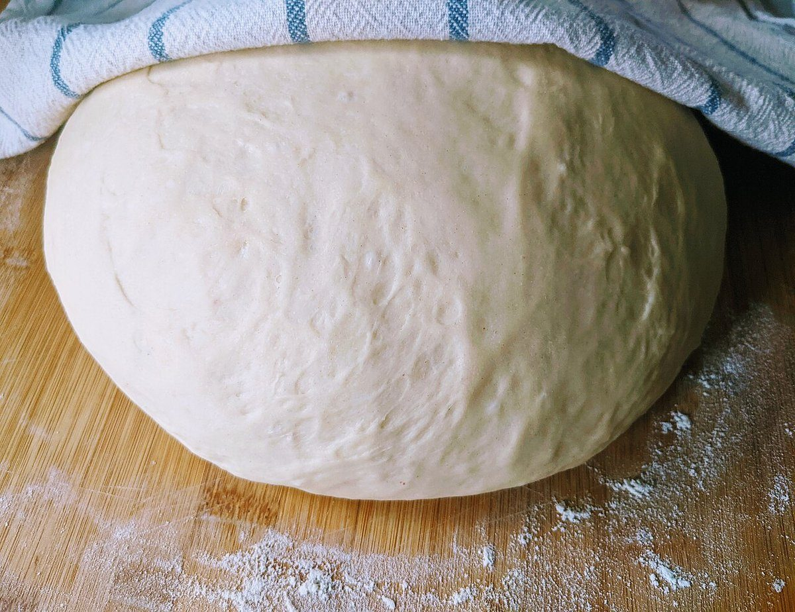
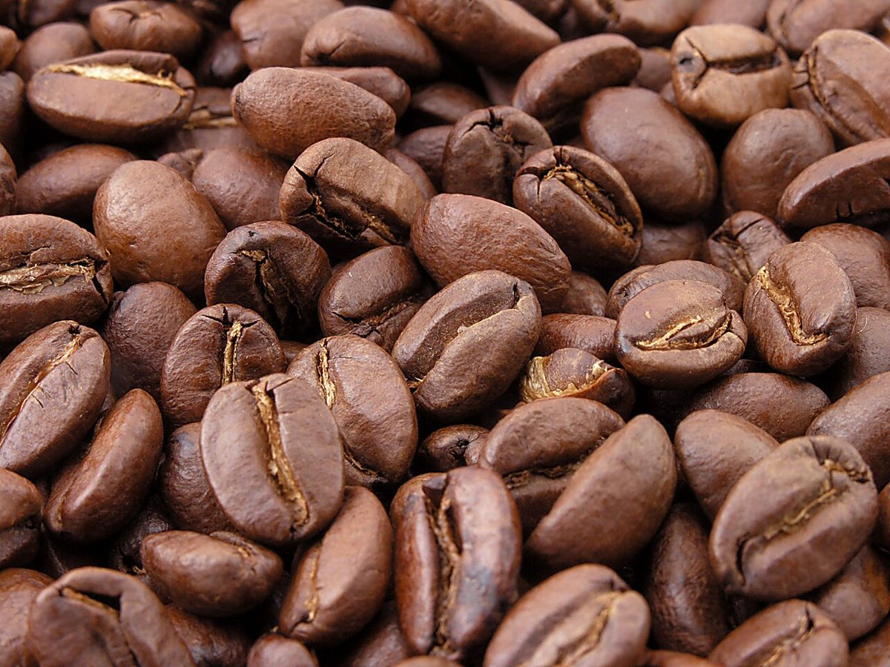

1016 hPa
店のこと
お店について確認できているのは、所在地・電話番号・Instagramのアカウントです。
「想像してみる」の部分は制作側の想像です。お店の実際の様子・考え・メニューとは関係がありません。
確認できていること
- 店名は「Coffee風の丘」、業種はカフェ
- 所在地は山梨県山梨市牧丘町西保下６２７１−１０(〒404-0004)
- 電話番号は080-6752-0830
- Instagramは @kazenookacafe
- 営業時間・定休日・メニュー・価格・ご予約・駐車場は準備中

第2図
想像してみる:等圧線をたどるように
ここからは制作側の想像です。天気図の等圧線は、同じ気圧の場所を結んだ線で、線の間が狭いほど風が強いと読みます。お店のことも同じで、いまは線が数本引かれただけの状態。これから営業時間やメニューがわかるたびに、線を一本ずつ書き足していくつもりでページを育てていきます。


